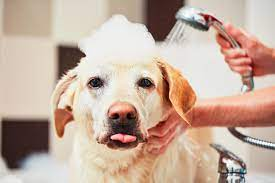
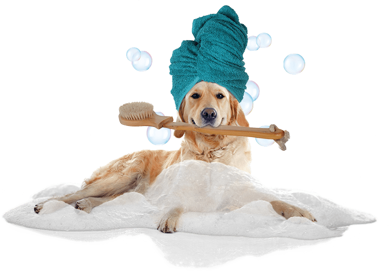

Who wants a dirty dog? Clean dogs are usually healthy dogs, but practicing good hygiene takes practice! If the practice starts during puppyhood, keeping your dog clean throughout his life will likely be easy.”
Bathing should be a relaxing experience. As newborns, pups enjoy being licked by their mothers, so take a few pointers from mama dogs. First, make sure the water is warmed to body temperature (like mother’s saliva). Mama dog does not splash her pup, so neither should we. Gently pour water over the pup, starting with the torso and moving to the feet. Use a damp cloth to wash the face without getting water in the pup’s eyes.
DO gently brush your dog’s coat every other day to prevent knotting and matting, and to help control shedding.do wipe any outdoor detritus from your canine’s coat with a damp towel as soon as you notice it. Survey your dog’s body for ticks regularly, especially in warmer months. check your dog’s paws often to ensure rocks, thorns, or other irritants aren’t embedded in them.DO keep your dog’s nails trimmed so they don’t get caught on anything resulting in an injury. Carefully trim hair that covers your dog’s eyes if they’re a breed prone to this characteristic.DO wipe the inside of your dog’s ears weekly with a moist cotton ball.
Dogs Treaments